Respuesta de Actividades del Libro de Decimo de Ciencias Naturales
Elija la Unidad:
EL ORIGEN DE LOS SISTEMAS DE CLASIFICACIÓN
Desarrolla tus destrezas.
1.Coloca al frente del nombre de cada uno de los siguientes científicos su aporte a la clasificación de los seres vivos.
a. Carl von Linné: Ideó el sistema de nomenclatura binomial
b. Charles Darwin: Explicó que el parecido entre los individuos se debe a que comparten un ancestro común.
c. Aristóteles: Fue el primero en establecer categorías para la clasificación
2.¿Cuál es la diferencia entre sistemática y taxonomía?
La sistematización describe las relaciones evolutivas entre los seres vivos, la taxonomía los clasifica. La sistemática se apoya en la taxonomía.
3.¿Por qué se llama binomial la nomenclatura propuesta por Linneo?
Porque el nombre científico de las especies está conformado por dos partes el genero y el epiteto y el especifico.
4.Relaciona la característica con su tipo de carácter.
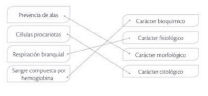
7. Elabora un gráfico de barras con los datos de la tabla.
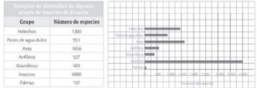
8. Identifica los grupos de especies que corresponden al mismo reino y colorea la barra del mismo color.
plantas: palmas, helechos.
animales: insectos, anfibios, aves y peces.
9.¿Qué tienen en común los taxones que están representados por el mismo color?
c. Que pertenece al mismo reino.
10.¿Qué reinos de la naturaleza están representados en la gráfica que realizaste?
Animal y Plantea
11.Calcula cuál es el número total de especies del reino animal y del reino Plantae, según los datos procesados.
Animal: 7537.
Plantea: 1437.
12. ¿Por qué los insectos aunque pertenecen al reino animal no están en la misma categoría que los otros animales?
Los insectos siendo del reino animal son artrópodos invertebrados. Los otros indicados en la tabla son vertebrados.
13. Observa el nombre de las siguientes especies y selecciona aquellas que presentan algún error; luego, escríbelas de forma correcta.
a. Homo sapiens (humano):
b. Cannis Lupus (lobo): Canis lupus
c. AMAZILIA LUCIAE (colibrí): Amazilia luciae
d. Persea americana (aguacate)
e. equus ferus (caballo): Equus ferus.
14. Relaciona con una línea el concepto de especie con su definición.
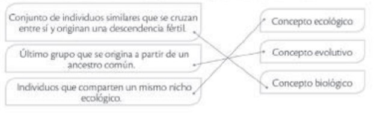
15. ¿Cuáles son las especies que más características tienen en común?
Las especie A,B,C.
16.Selecciona la respuesta adecuada. ¿Cuál es el coeficiente de similitud aproximado entre las especies F y E?
0,8 aproximadamente 1. Por ende la respuesta es
c)1,0
18. Sigue las pistas y completa la palabra oculta.
a. Se basa en los estudios de ADN y ARN de los organismos.
molecular
b.Escuela que se basa en la clasificación de especies únicamente por la cantidad de similitudes entre ellas.
fenética
c.Escuela que muestra relaciones evolutivas entre los organismos.
filogenia.
5. Organiza de menor a mayor nivel jerárquico las siguientes categorías taxonómicas.
de menor a mayor, el menor en este caso sería 1. Especie y el mayor 4.Dominio Por lo tanto, nos queda:
1. Especie.
2. Género.
3. Familia.
4. Dominio
6.Selecciona la respuesta adecuada. ¿Los organismos de cuáles reinos presentan pared celular?
son:
b.Vegetal
c.Protista
d.Fungi
19.¿Qué importancia tienen las arqueas metanógenas?
Tienen importancia ecológica, pues intervienen en la degradación de materia orgánica.
20. ¿Cuáles son las principales diferencias entre arqueas y bacterias? Conversa con tus compañeros.
La principal diferencia es la constitución de la pared celular, que en arqueas no tiene peptidoglicano, presente en la pared de las bacterias un carácter compartido es que los dos grupos están formados por células procariotas.
21.Responde falso o verdadero a las siguientes afirmaciones.
a. El moho del pan es un hongo perteneciente al grupo de los ascomicetos.
Falso.
b. Los líquenes son la asociación entre un alga y un hongo.
Verdadero.
c. Las micorrizas son hongos parásitos.
Falso.
d. Los champiñones son quitridiomicetos.
Falso
22. ¿Qué importancia tienen los hongos en el ámbito ecológico? Menciona dos ejemplos en los que se demuestre esta importancia.
Los hongos mantienen el equilibrio del ecosistema, pues muchos se encargan de degradar la materia orgánica, por ejemplo los saprobiontes. También pueden hacer asociaciones con plantas para ayudar a la toma de nutrientes y a la conservación de de humedad, por ejemplo, las micorrizas y los líquenes, que son hongos simbiontes.
23. ¿Qué diferencias hay entre las tres divisiones de briofitas? ¿Qué tienen en común?
Tienen en común que no presentan tejidos conductores. Las hepáticas tienen foliolos en forma de lámina y rizoides unicelulares, los musgos tienen rizoides multicelulares y los antoceros se diferencian de los otros dos grupos porque presentan cápsulas alargadas y poseen un solo cloroplasto por célula
25. Identifica cada estructura, escribe su nombre y el grupo de plantas del cual es representativa
Estructura: Espoforicos
Grupo: brioritas
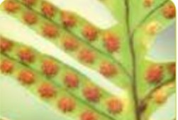
Estructura: Soros
Grupo: Helechos
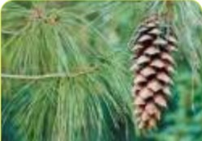
Estructura: piñas.
Grupo: gimnospermas.
Grupo:> flores.
Grupo: angiospermas.
24. ¿Qué función vital de las plantas desempeñan las estructuras de la imagen?
Reproducción.
25. ¿Cómo obtienen el agua las briofitas si no tienen raíces?
Por células especializadas que conducen el agua del suelo a los tejidos.
26. ¿Cuáles son las diferencias fundamentales entre monocotiledóneas y dicotiledóneas?
El número de cotiledones y la disposición de las haces vasculares en el tallo.
27. ¿Por qué las gimnospermas son llamadas plantas con semilla desnuda?
Porque carecen de flores con carpelos y sépalos.
29. Las plantas monocotiledóneas tienen un solo cotiledón y las dicotiledóneas poseen dos. Recolecta un grupo de semillas de diferentes plantas como aguacate, chochos, maíz, habas, trigo, fréjol, maní, etc. Parte la semilla en la mitad e identifica a qué grupo pertenece.
Monocotiledóneas: maíz, trigo.
Dicotiledóneas: aguacate, chocos, habas, frejol, maní.
30. Indica un ejemplo de animales con simetría radial y bilateral fuera de los que están presentados en el texto.
Simetría radical:galleta de mar, simetría bilateral: peces, ser humano.
31. Realiza un dibujo de un animal celomado y uno acelomado.
Celomado:
Lombriz, caracol, babosa, calamar
Acelomado:
planaria
32. Relaciona las imágenes con su filo escribiendo la letra que corresponda.
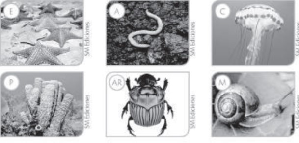
33. ¿Cuál es el número de especies anfibias registradas actualmente en Ecuador?
Se encuentran registradas 550 especies que corresponden al 9% de la diversidad de anfibios en el mundo.
UNIDAD #2: LA REPRODUCCIÓN CELULAR
1.Identifica las fases de las siguientes imágenes. Escribe su nombre en el espacio provisto.
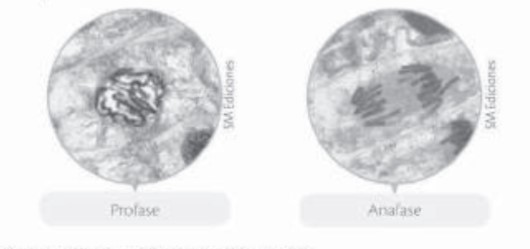
2. ¿Con qué fin se utiliza la orceína A y B?
En un tinte vegetal de color rojo que se extra de lo liquenes y es especifico para teñir cromosomas para que puedan ser observados al microscopio.
4.Contesta si las afirmaciones a continuación son verdaderas (V) o falsas (F).
a. La reproducción sexual es ventajosa en organismos que viven en ambientes que no presentan mucha variación en sus condiciones.
FALSO
b. La ovogénesis y la espermatogénesis son procesos que involucran división mitótica para generar 1 y 4 gametos, respectivamente.
FALSO
c. Los ciclos de vida pueden ser clasificados según la proporción de tiempo que gasta un organismo en un estado de ploidía determinado.
VERDADERO.
5.Identifica a qué tipo de ciclo de vida corresponden los siguientes esquemas.
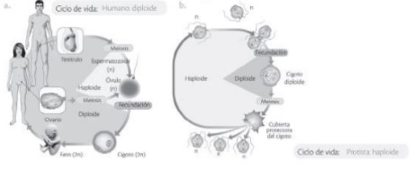
a.Humana diploide
b.Protista haploide.
6.¿Qué implicaciones puede tener para la salud humana este tipo de recombinación genética en bacterias patógenas, diferentes de las que producen bacterias sin esta variación?
Las bacterias patógenas ganan diversidad, por eso es difícil controlarlas y algunas seran resistentes a los antibióticos.
7.¿Por qué, a diferencia de las bacterias, los protistas requieren un proceso de mitosis para llevar a cabo la reproducción asexual?
Protistas, tienen núcleo; desintegran la membrana nuclear para dividirse y realizar mitosis.
Bacterias, no tienen núcleo, no necesitan este proceso para dividirse.
8.Relaciona los términos de las dos columnas de forma adecuada.
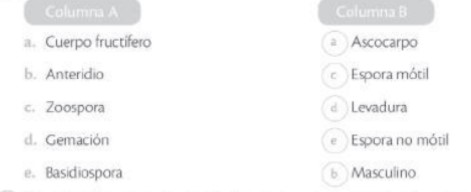
9.¿Qué otras funciones desarrollan las esporas en la reproducción de los hongos durante sus diferentes ciclos de vida?
Las esporas son estructuras de protección cuando las condiciones ambientales son adversas; germinan hasta que las circunstancias mejoran
11.Observa las imágenes A y B. Identifica el tipo de reproducción que tendrían el hongo A y el hongo B. Explica tu respuesta.
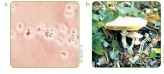
El hongo A es unicelular por lo que se reproduce asexualmente por germinación o bipartición.
El hongo tipo B tiene cuerpo fructífero y se reproduce sexualmente por union de sus gametangios o asexualmente por esporas.
12.Explica por qué conocer sobre los hongos tiene importancia para el ser humano.
Las levaduras se utilizan en la fermentación de la cerveza y el pan, los saprofitos intervienen en la descomposición de la materia orgánica. Las trufas y setas son fuente de alimento. Se usan para producir antibióticos y como un control de plagas. Algunas variedades causan enfermedades.
13.¿Cuáles plantas conoces de cada grupo?
Briofitas: musgos y hepáticas.
Pteridofitas: helechos.
Gimnospermas: pinos y cipreses.
Angiosperma: presenta flor; orquídea o manzano.
14.¿Por qué crees que los musgos y los helechos necesitan vivir en ambientes húmedos y con bastante lluvia para llevar a cabo su reproducción sexual?
Los gametos de los musgos y helechos son flagelados; necesitan el agua para desplazarse y fecundar.
15.¿Cómo crees que los gametofitos evitan la autofecundación si son capaces de producir gametos masculinos y femeninos en un mismo individuo?
Los gametofitos producen en diferentes momentos los gametos masculinos y femeninos.
16. ¿Por qué en la reproducción asexual de las plantas los descendientes son idénticos entre sí e idénticos a su progenitor?
Son idénticos porque tienen la información genética de la planta madre
17.Las plantas con reproducción sexual pueden presentar esporofito y gametofito.
¿Crees que estos se encuentran en plantas con flor? Justifica tu respuesta.
El gametofito es el polen con los gametos masculinos el esporofito es resultado de la fusión de los gametos.
18.Compara las ventajas y desventajas entre los dos tipos de polinización.
Polinización anemófila:
*Ocurre con ayuda del viento. El gameto no siempre llega a las flores, por ello no es tan efectiva.
*No hay flores llamativas
Polinización anemófila:>
*Ocurre con intervención de animales que contribuyen a la polinización cruzada.
*Requiere flores llamativas para atraer los polinizadores.
19.Las plantas con polinización anemófila tienen flores menos llamativas que las de polinización zoófila. ¿Cuál crees que es la razón por la que esto sucede?
No necesitan llamar la atención, pues el viento no debe ser atraído para transportar el polen
20.¿De qué se alimentarán las crías que son producto de la reproducción ovovivípara?
Se alimentan de los nutrientes que están al interior del huevo.
21.¿Por qué los equidnas y los ornitorrincos son excepciones en su reproducción, respecto a los demás mamíferos?
Son excepciones porque son ovíparos, es decir, ponen huevos.
22.Algunas especies de peces como el pez halcón son capaces de cambiar de sexo en la edad adulta. ¿Qué factores influyen para que este tipo de peces propicie el cambio de sexo?
El cambio de sexo se debe a la falta de machos cuando hay pocos machos, algunas hembras cambian su sexo. Si un macho dominante desplaza a otro, este ultimo puede cambiar su sexo a hembra.
23.¿Cuáles crees que pueden ser las desventajas de los cantos durante la época de apareamiento de los animales?
Los cantos pueden atraer a depredadores, el canto es un proceso que requiere mucha energía.
24.¿Qué crees que pasa respecto al cuidado parental en especies que son criadas en cautiverio? ¿Qué sucede en especies que se reproducen en criaderos como los pollos y las vacas? Coméntalo con tus compañeros.
En cautiverio, las crías tienen cuidado parental, si corren peligro son retiradas y sustituidas por cuidadores. En los animales de crianza es reemplazado por granjeros.
25.¿Qué ventajas y qué desventajas trae este comportamiento para la especie?
Ventajas: cuidado parental y asistencia del macho para la alimentación de las crías.
Desventajas: disminuye la diversidad genética, pues la hembra scolo se reproduce con un macho.
UNIDAD #3 SISTEMA INMUNITARIO Y LOS VIRUS.
Reflexiona con tu familia acerca de la importancia del autocuidado. Escribe cuatro acciones que contribuyen a disminuir la exposición a agentes infecciosos.
Baño diario
Tapar la boca para toser.
No comer alimentos con poca higiene.
Coloca (F) si la afirmación es falsa o (V) si es verdadera.
a. El sistema linfático puede considerarse un segundo sistema circulatorio.
VERDADERO
b. La linfa se mueve gracias a la acción de bombeo del corazón.
FALSO
FALSO
d. Los ganglios linfáticos se encargan de producir glóbulos blancos que atacan a agentes extraños.
VERDADERO
3.Menciona dos funciones del sistema linfático.
*Tiene función inmunológica.
*Ayuda a regular el equilibrio de los fluidos del organismo.
4. ¿Qué sucedería en un tejido si los vasos linfáticos que lo rodean no hicieran su función?
Se inflaman debido a la acumulación de linfa entre sus células.
5.Eres un médico que recibe un paciente que dice estar muy enfermo; últi- Normalmente le ha dolido la cabeza y a pesar de haber tomado medicamento no le pasa el dolor. Al examinar meticulosamente te das cuenta de que en su cuello y sus axilas tiene unas pequeñas masas. Según tus conocimientos, ¿cuál diagnóstico le darías a este paciente?
El paciente puede estar sufriendo una infección porque en estas zonas del cuerpo se encuentran ganglios linfáticos que se inflaman cuando se necesita mas globulos blancos que eliminan agentes extraños del cuerpo.
6.Relaciona el término con su función colocando la letra en el espacio correspondiente.
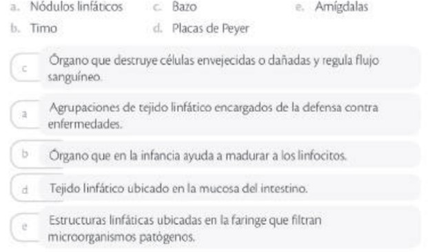
7.¿Por qué el toser y estornudar es un mecanismo de barrera pero también puede ser un medio de contagio?
La tos y el estornudo en personas que tienen infecciones respiratorias como influenza liberan microorganismos que pueden causar enfermedades.
8.¿A qué se dedica un inmunólogo?
Los inmunólogos estudian las alergias que son las enfermedades del sistema inmune.
9.¿Qué son los linfocitos y donde se producen?
Glóbulos blancos producidos en la médula ósea.
10.¿Por qué toses y estornudas de repente?
Porque son mecanismo para impedir que agentes extraños entren al cuerpo.
11. ¿Qué podría suceder si, por ejemplo, dejaras de producir sudor o las sustancias químicas que recubren tu intestino?
El sudor y las mucosidades del intestino son barreras que evitan el ataque de patógenos; si se dejaran de producir serían más susceptibles a enfermedades infecciosas.
12.¿Qué implicaciones para la salud tiene la extracción de las amígdalas? ¿Por qué?
Las amígdalas son barreras que protegen contra los patógenos al extraerlas se es susceptible a estos agentes.
13.Utiliza las variables personas, lugar y tiempo para establecer la diferencia entre los tres términos.
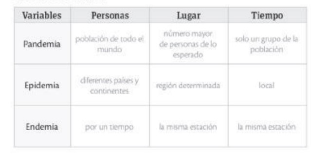
14. Consulta dos enfermedades causadas por protozoos y dos causadas por bacterias.
*Protozoos: Mal de Chagas, Malaria.
*Bacterias: Neumonía, Meningitis.
15.Completa el cuadro y responde cómo se adquieren esas enfermedades, cuáles son sus signos y síntomas, y cuál es su tratamiento.
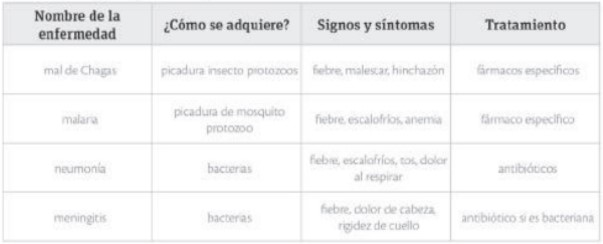
16.¿Qué es el gluten?
Es un grupo de proteínas de granos como trigo, centeno, cebada.
16.Une con una línea el tipo de enfermedad
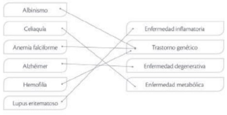
17.¿Por qué el polen de las flores no genera alergia a todas las personas?
Los alergenos son sustancias comunes que afectan únicamente a las personas que tienen una hipersensibilidad.
18.¿Qué se puede valorar de aquellos científicos que se dedican a investigar nuevas alternativas para mejorar la salud de la población aunque en sus procesos algunas personas hayan fallecido por su causa?
Los nuevos descubrimientos tienen un impacto positivo y negativo. Se consideran beneficiosos cuando no hacen daño a quienes los reciben, pero en la ciencia siempre deben probarse nuevos productos en animales como ratones y cuyes, por los efectos secundarios que pueden tener los nuevos productos.
19.¿Durante qué año se presentó el mayor número de casos de sarampión?
1965
20. ¿Cuál es la enfermedad que menos incidencia tiene en el año 2000?
Sarampión
21.¿Cuál de las enfermedades sigue teniendo una alta incidencia?
La tuberculosis.
22.¿Cuáles enfermedades que se muestran en la gráfica crees que tienen vacuna?
Sarampión y hepatitis A.
24.¿Por qué la mayoría de las vacunas se reciben durante los primeros años de vida?
Las vacunas son un sistema de proteger al organismo de agentes extraños que causan enfermedades y los recién nacidos no tienen desarrollados anticuerpos contra ninguna de las enfermedades graves que pueden ser prevenidas.
26:¿Cómo una transfusión sanguínea podría contagiar una enfermedad viral?
La transfusión sanguínea solamente podría contagiar una enfermedad viral si la aguja ha sido afectada por una persona que tiene una enfermedad viral o en el caso muy poco probable en que no se hayan realizado las pruebas apropiadas para determinar que es sangre segura.
27.Señala las enfermedades virales conocidas como enfermedades eruptivas.
Nanotecnología es el estudio y manipulación de materiales a nivel del átomo, El nanómetro es una magnitud de medida que corresponde a la milmillonésima parte del metro o la milésima de un milímetro.
28.¿Por qué existen varias teorías acerca del origen de los virus?
Una teoría es un conjunto de ideas o especulaciones que tratan de explicar algún tema. En el caso del origen de los virus las tres teoría están basadas en algunas observaciones.
UNIDAD#4: EL ORIGEN DE LA VIDA EN LA TIERRA Y LA EVOLUCIÓN.
1.¿Por qué en Mercurio y Marte no se puede desarrollar la vida tal como la conocemos en el planeta Tierra?
Mercurio está muy cerca al Sol y su temperatura es muy alta. Marte está muy alejado y la temperatura es muy baja, en promedio, 23°C.
2.¿Por qué Plutón ya no se considera un planeta?
Por su tamaño reducido y también porque su órbita es diferente de la de los demas planetas; su inclinación no es paralela a la de la Tierra.
5.Organiza secuencialmente los eventos relacionados con el origen de la vida colocando números en los espacios, de acuerdo con las teorías científicas actuales.
2.Formación de nucleótidos
1.Formación del carbono
3.Aparición del RNA
4.Autorreplicación del RNA
5.Formación de ADN y proteínas
6.Completa. ¿De qué forma aportan las siguientes áreas a la biogeografía?
a. Geografía
Describe la superficie de la Tierra.
b. Geología
Estudia el origen, evolución y estructura del planeta.
c. Paleontología
Estudia restos fósiles de organismos desaparecidos.
d. Edafología
Estudia las características de los suelos.
e. Climatología
estudia el clima y sus cambios
7.¿Cuáles son los países con mayor riesgo sísmico?
Las regiones costeras de los países sudamericanos y de Centroamérica.
8. ¿Qué zonas tienen bajo riesgo sísmico?
Brasil, Guyana, Uruguay.
9.¿Cuáles factores hacen que un país o región tenga más riesgo sísmico?
Estar situado sobre alguna falla geológica y ser un país muy joven, en el cual las placas tectónicas aún continúan acomodándose.
7.¿Cuáles son las placas involucradas en el surgimiento de la cadena montañosa del Himalaya y de la cordillera de los Andes?
Himalaya: la placa de India y la placa de Eurasia.
Los Andes: La placa de Nazca y la Sudamericana.
8.Coloca sobre la línea qué tipo de límite sería el responsable de los siguientes fenómenos.
a. Ayer se reportó un temblor de 5,4 en la escala de Richter en San Francisco, EE.UU.
Límite de transformación
b. El monte Everest cada vez está más alto.
Convergencia
c. Los continentes de Asia y América cada vez están más cerca
Convergencia, subducción
d. El océano Atlántico cada vez tiene una mayor área.
Divergencia.
9.¿Cuál es la superficie de cada uno de los países representados en la gráfica?
Brasil 8.516.000 km2
Perú 1.285.000 km2
Ecuador 283.560 km2.
10.¿Cuáles serían los factores que tienen en común estos países y que influyen en su diversidad?
Latitud, disponibilidad de agua, productividad primaria, insalubridad, estabilidad ambiental.
11.Responde falso (F) o verdadero (V) frente a cada frase.
a. La altitud pone serias restricciones de luz a las poblaciones de organismos.
Falso.
b. Las condiciones extremas fomentan el desarrollo de la biodiversidad.
Falso.
12.¿Por qué en regiones aisladas, como en las islas, la cantidad de especies endémicas es mayor?
Porque los recursos disponibles son limitados y las especies tienden a especializarse para sacar el mayor provecho de ellos.
13.Resume las probables causas que pueden generar una extinción masiva.
Los cambios abruptos de temperatura en el planeta, el choque de meteoritos contra el planeta, los propios procesos internos en la biosfera, la explosión de supernovas, el cambio en el campo magnético de la Tierra.
16.Completa el siguiente mapa conceptual con la clasificación de las rocas.
Clasificación de las Rocas
Ígneas:
*Intrusivas
*Extrusivas: Volcánicas: Piroclásticas.
Sedimentarias
*Roca clástica
*Roca sedimentaria química.
Metamórficas:
*Foliadas
*No foliadas
16.Relaciona el tipo de roca con la descripción colocando la letra en el espacio correspondiente.
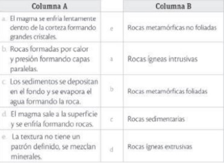
UNIDAD #5: CAMBIOS EN LA TIERRA.
1.¿Cuántos años, aproximadamente, tiene Sudamérica?
150 millones de años.
2.Completa
El territorio que ahora conforma Sudamérica tuvo un origen en el que contribuyó el
vulcanismo , de acuerdo con las rocas que presenta.
3.El intercambio americano se dio gracias a
d. El surgimiento del istmo de Panamá.
4.Ordena de manera cronológica; para ello, coloca el número que corresponda sobre la línea.
1.Pangea (primero)
4.Surgimiento del istmo de Panamá (cuarto)
3.Sub Fragmentación de Gondwana (tercero)
2.Migración de Laurasia (segundo)
¿Qué factores pudieron haber determinado la gran diversidad de peces de agua dulce que existe en Sudamérica?
El cambio en los sistemas de agua dulce, el aumento en el nivel del mar, las características del agua dependiendo la región.
8.Menciona tres factores que expliquen la gran biodiversidad que posee Ecuador.
Cordillera de los Andes.
Zona tropical.
Corrientes marinas.
9.¿En qué región del planeta se ubica el agujero de la capa de ozono?
Aproximadamente 1,2 km
2.
10.¿Cuál sería tu predicción para el 2020 de este problema ambiental?
Si sigue aumentando la emisión de sustancias que destruyen la capa de ozono para el 2020 será de aproximadamente de 35,5 km
2.
9.¿Qué efectos tiene sobre la salud humana la disminución de la capa de ozono?
Las UV entran directo a la Tierra y dañan las células, se desarrollan enfermedades como cáncer de piel.
10. ¿Cuáles son las consecuencias ambientales del aumento de la temperatura en el planeta?
Inundaciones, deshielos, aumento nivel de los océanos.
11. ¿Qué pasaría con las especies si la temperatura aumentara en 3°C?
Las especies no se adaptan a los nuevos cambios de temperatura y se daría extinción masiva de flora y fauna.
UNIDAD #6: LOS FLUIDOS
1.¿Por qué es importante la viscosidad en los aceites lubricantes de motores y qué sucede cuando aumenta la temperatura?
El aceite lubricante actúa como un sello entre las piezas del motor y al calentarse fluye con mayor facilidad.
2.La ley de Boyle dice que el volumen de un gas varía inversamente con la presión del gas. ¿Cuál de las siguientes afirmaciones sería correcta?
A mayor presión menor volumen de un gas.
3.¿Cuál de los siguientes diagramas representa el comportamiento del mercurio dentro de un tubo capilar? Explica la respuesta.
El mercurio tiene una fuerza de adhesión intermolecular mayor que la fuerza de adhesion con otras superficies solidas.
4.Complete las siguientes afirmaciones.
a. El aceite es un fluido más
viscoso que el agua.
b. Un fluido que reduce su volumen al aplicarle una fuerza se denomina
fluido incomprensible, por ejemplo
los líquidos.
c. Un líquido moja si la
cohesión es menor que la
adhesión.
d. Para
aumentar la presión se debe reducir el área o
aumentar la fuerza.
5. Un surfista que pesa 700 N se desliza sobre las olas con una tabla de 150 cm2 de área. Calcula la presión que ejerce sobre las olas. Recuerda que la fórmula para calcular la presión es P=F/A
Fuerza: 700N.
Área: 0.15 m2.
F/A= 700/0.15=4666,666
P=4666,666
9.¿Qué es un fluido?
Toda sustancia que tiene la capacidad de fluir cuando se le aplica una fuerza constante.
10.¿Por qué existe la tensión superficial?
Porque las moléculas de la superficie son atraídas por las moléculas bajo la superficie y las moléculas vecinas.
11. Cuando se sumerge el borde de un papel en agua, el agua empieza a ascender hasta humedecer gran parte del papel. ¿Por qué ocurre esto?
Porque el agua tiene una fuerza de atracción mayor hacia el sólido, en este caso el papel, que tiene mayor adhesión que cohesión.
12.¿Es lo mismo un fluido denso que un fluido viscoso? Explica tu respuesta.
No, la densidad relaciona la masa con el volumen cuanto mayor en la masa mayor es su densidad. La viscosidad define la fluidez de un material cuanto más viscoso es un material más espeso es, pero no más denso.
¿Qué es la fuerza de empuje?
Es la fuerza que actúa de abajo hacia arriba cuando un cuerpo es sumergido en un liquido
14.Si un pez se hace más denso se hundirá; si se hace menos denso, subirá. ¿Por qué? Ten en cuenta la acción de empuje y el peso del pez.
Si el pez aumenta su densidad, reduce su volumen, desplaza menos agua y disminuye el empuje. Cuando el pez disminuye su densidad se infla, desplaza mayor volumen de agua y aumenta la fuerza de empuje.
15.Si arrojas una piedra grande en un lago profundo y se hunde, ¿aumenta o disminuye la fuerza de empuje sobre ella?
El empuje siempre es el mismo, no aumenta ni disminuye, en este caso, es menor que el peso de la piedra.
16.Si hay dos orificios laterales en una botella que contiene agua, ¿por qué se dice que a mayor presión el chorro tiene mayor alcance?
La presión es proporcional a la profundidad y el chorro que despedirá el agua con la presion suficiente para alcanzar gran distancia en su salida.
17.Un cuerpo pesa en el aire 80 N y al entrar en agua pesa 50 N, ¿dónde se encuentra el resto de su peso?
+El resto del peso es la lectura que hace el empuje cuando el cuerpo ingresa al fluido 30
N=E
18.¿Por qué se hundió el Titanic?
El Titanic se hundió porque al chocar con un iceberg, cinco de sus compartimentos se llenaron de agua y solo podía mantenerse a flotación con cuatro de ellos llenos.
19.¿Qué es el freón y cuál fue su impacto en el ambiente?
El freón es un refrigerante compuesto por clorofluorocarbonos(CFC) y fue retirado del mercado por dañar la capa de ozono.
20.Identifica cada compuesto de carbono colocando la letra que corresponde el estado en que se presenta. Sólido (S) Líquido (L) Gaseoso (G).
a. Hulla (S)
b. Carbón activado
(S)
c. Freón
(L/G)
d. Dióxido de carbono
(G)
e. Grafito
(S)
21. ¿Cuál es la diferencia entre un monómero y un polímero?
El prefijo “mono” significa uno, por lo que se refiere a la subunidad de los compuestos orgánicos y “poli” significa mucho, que corresponde al conjunto de subunidades que forman un gran compuesto.
22.¿Qué son los rumiantes?
Son los animales que digieren los alimentos en dos etapas. Primero los digiere parcialmente para mezclar con saliva y enzimas para seguir las masticación hasta su digestión completa. Los bovinos y ovinos son ejemplos de rumiantes.
22.¿Cuáles proteínas intervienen en el movimiento de los vertebrados?
Actina y Miosina
23. Responde si las siguientes afirmaciones son falsas (F) o verdaderas (V).
a. Las características de una proteína están dadas por los tipos de aminoácidos que la conforman.
Verdadero.
b. El enlace peptídico permite mantener los componentes de un aminoácidos unidos.
Falso.
c. Las funciones de las proteínas están limitadas a dar estructura y forma a los seres vivos.
Falso.
d. Una proteína puede estar conformada por más de un polipéptido.
Verdadero.
24.¿Por qué la estructura primaria de una proteína está codificada en la secuencia de ADN de un gen, mientras que los otros tipos de estructuras no lo están?
La estructura primaria de las proteínas en la secuencia lineal de aminoácidos que esta directamente codificada en el ADN, mientras que las otras estructuras se producen por enlaces químicos que no están codificados en el ADN.
25. Relaciona de manera correcta los términos de la columna A con las definiciones de la columna B.
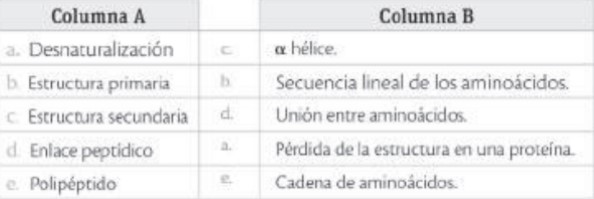
26.Relaciona de manera correcta los términos de la columna A con las definiciones de la columna B.
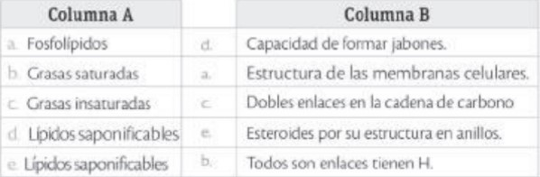
27.Si tienes la siguiente secuencia de una de las cadenas de ADN: ATTGACGCA, ¿cuál sería la secuencia de la cadena complementaria?
Cadena complementaria: T A A C T G C G T